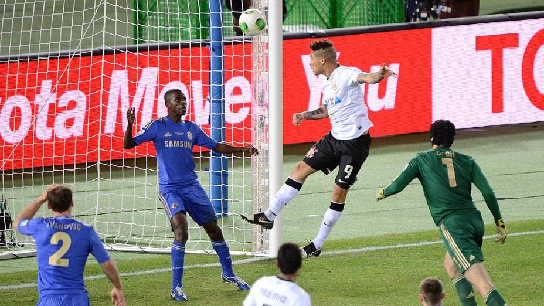
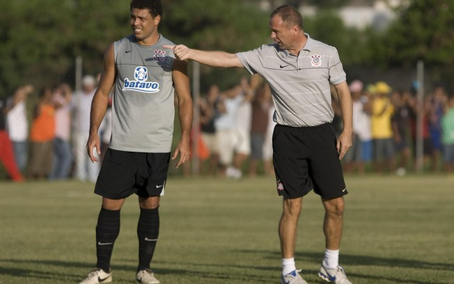

O dia 16 de dezembro está marcado como um dos mais importantes da história do Corinthians. Em um domingo, o clube batia o Chelsea (ING) por 1 a 0 e sagrava-se bicampeão mundial em Yokohama no Japão. Uma conquista para acabar de vez com as provocações dos rivais sobre a força internacional do Timão. Não foi nada fácil. Campeão europeu, o Chelsea tinha nomes consagrados como o volante Frank Lampard e o meia Eden Hazard, hoje um dos principais jogadores do mundo. A equipe comandada pelo espanhol Rafael Benítez criou mais no primeiro tempo, mas esbarrou no paredão Cássio. Foram várias defesas difíceis, que fizeram do arqueiro o melhor jogador da partida. Do outro lado, porém, havia Tite e seus comandados. O técnico brasileiro montou uma formação que permitiu ao Corinthians encarar os ingleses de igual para igual. Com relação à semifinal, sacou o meia Douglas e colocou Jorge Henrique, mais forte taticamente. Deu certo. Em vários momentos, o Timão controlou o jogo. Criou chances com Paulinho, Sheik, Guerrero. Até que aos 24 minutos do segundo tempo, Danilo chutou prensado na área e, no rebate, o peruano mandou para as redes de cabeça: 1 a 0. O Corinthians conseguia o bi atravessando o mundo, 16 anos depois de vencer o Mundial da Fifa no Brasil. O fez ao lado de sua apaixonada torcida, que invadiu o Japão. Na final, mais de 30 mil pessoas entre os 68.275 pagantes. A Fiel foi reverenciada por todo o planeta. Foi a consagração do Time do Povo!
Ex-técnico do timão, Mano Menezes, relembrou algumas histórias engraçadas de Ronaldo nos treinos: "Nos primeiros treinamentos como titular, ele sempre optava pelo toque curto em vez de partir para o ataque. E o Ronaldo ficava louco, porque queria a bola nele. Certa vez Ronaldo se irritou, abriu os braços e gritou para o Ralf:'Pô, será que gordo desse jeito eu sou invisível?'"
Em oito toques o Corinthians calou a Bombonera. Numa jogada que começou com o desarme de Paulinho sobre o craque Riquelme, o volante do Timão tocou cinco vezes na bola e a passou para Emerson, que, após dois outros toques, deixou Romarinho na cara do gol. E o atacante de 21 anos, em sua primeira jogada na história da Libertadores da América, mostrou frieza ao esperar o goleiro Orión cair e chutar por cima dele, aos 40 minutos do segundo tempo. Romarinho entrou na partida aos 38 minutos do segundo tempo, no lugar de Danilo. Na sexta-feira passada, antevéspera do clássico contra o Palmeiras, o atacante deu entrevistas dizendo que se brilhasse contra o rival paulista, poderia vir a sonhar com uma vaga no banco de reservas. Foi o que aconteceu. Em sua estreia como titular, Romarinho fez os dois gols da vitória por 2 a 1 sobre o Palmeiras. Assim, acabou desbancando Willian, com um lugar no banco na partida contra o Boca. Parecia já a realização de um sonho, mas o jovem atacante ainda teria mais: não só entrou em campo como fez o gol do empate do Timão.
– Graças a Deus brilhou a minha estrela e eu consegui fazer o gol – comemorou Romarinho.
– Foi meu primeiro toque e consegui finalizar. Vi que o goleiro estava caindo e consegui dar o toque por cima – emendou o atacante.